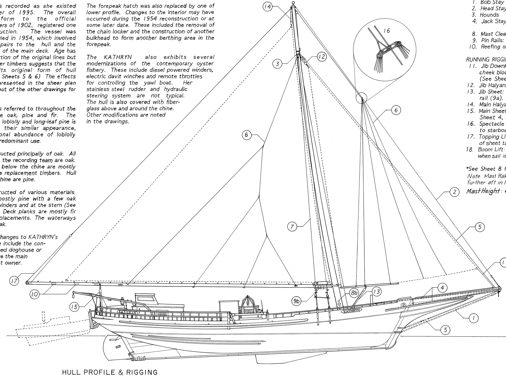

Original scan pixels: [2108, 853, 11597, 7976]; source SHA-256: fede6b7745aa3936961fd5b686034f624a1d56b7bd0f774192670cbb40c1dd9c.
Native lossless view · Raw OCR · Word coordinates/confidence · Manifest

5 recorded as she existed sr of 1995. The overall form to the official ers of 1902, registered one uction, The vesse! was led in 1954, which involved pairs to the hull and the of the main deck. Age has tion of the original lines but er timbers suggests that the ts original form of hull Sheets 5 & 6) The effects resented in the sheer plan ut of the other drawings for > referred to throughout the e oak, pine and fir. The loblolly and long-leaf pine is their similar appearance, onal abundance of loblolly redominant use. ucted principally of oak. All the recording team are oak. below the chine are mostly 2 replacement timbers. Hull hine are pine. acted. of various materials. jostly pine with a few oak vinders and at the stern (See Deck planks are mostly fir placements. The waterways ak. hanges to KATHRYN’s p > include the con- ed doghouse or e the main t owner. The forepeak hatch was also replaced by one of lower profile. Changes to the interior may have occurred during the 1954 reconstruction or at some later date. These included the removal of the chain locker and the construction of another bulkhead to form another berthing area in the forepeak. The KATHRYN also exhibits several moderhizations of the contemporary oyster fishery. These include diesel powered winders, electric davit winches and remote throttles for controlling the yaw! boat. Her stainless stee| rudder and hydraulic steering system are not typical. The hull is also covered with fiber- glass above and around the chine. Ra Other modifications are noted / in the drawings. / | | TL WEEE CoLEr oro |. BOD stay 2. Head Stay 3. Hounds 4. Jack Stay 8. Mast Clea 9. Pin Rails: 10. Reefing o RUNNING RIGGI 11. Jib Down cheek bloc (See Shee 12. Jib Halyarc 13. Jib Sheet: rail (9a). 14. Main Halyz 15. Main Sheet Sheet 4, 16. Spectacle to starbo: 17. Topping Li of sheet tz 18. Boom Lift: when sail is *See Sheet 8 1 Note : Mast Ral further aft in! Mast Height : « HULL PROFILE & RIGGING